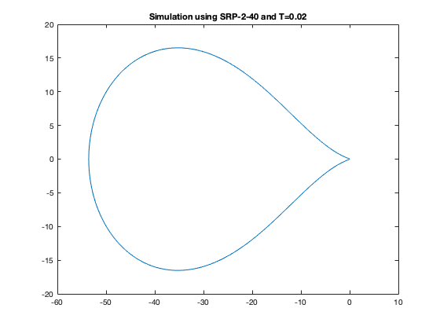
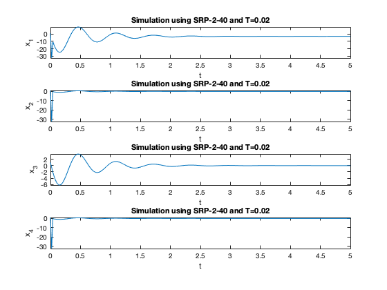
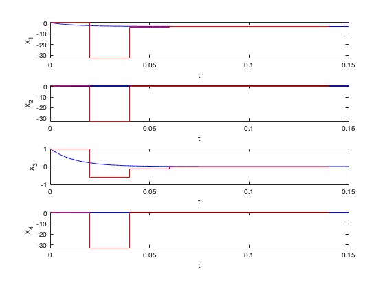

Contents
clc; close all; clear all;
A = [-244*10^-6 -1668 1.667 -8.332; 0 -321 320 -1679; 0 79 -80 -79; 0 -320 320 -1680];
B = [8;3;7;2];
x0 = [1;1;1;1];
Part A
eigen = eig(A)
disp('Stiffness Ratio = 2000')
eigen =
1.0e+03 *
-0.0000
-2.0000
-0.0010
-0.0800
Stiffness Ratio = 2000
Part B
T = 0.02;
tfinal = 5;
t = [0:T:tfinal];
N = length(t);
LT = eigen(2)*T;
Am = [0 1 0 -LT; 1 0 -LT 0; 1 1 0 0; 0 1 -1 -1];
Bm = [-exp(LT);0;-1;-2];
Xm = inv(Am)*Bm;
a0 = Xm(1)
a1 = Xm(2)
b0 = Xm(3)
b1 = Xm(4)
srpstr=['SRP-2-',num2str(abs(LT))];
tstr=['Simulation using ',srpstr,' and T=',num2str(T)];
a0 =
0.9750
a1 =
-1.9750
b0 =
-0.0244
b1 =
0.0494
Part C
theta=linspace(0,2*pi,1001);
z = 1*exp(theta*i);
w = (z.^2 + a1*z +a0)./(b1*z + b0);
figure;
plot(real(w),imag(w))
title(tstr)

Part D
x = zeros(4,N);
u = x;
f = x;
x(:,1) = [1 1 1 1];
k=1;
f(1,k) = -244*10^-6*x(1,k) - 1668*x(2,k) + 1.667*x(3,k) - 8.332*x(4,k);
f(2,k) = -321*x(2,k) + 320*x(3,k) - 1679*x(4,k);
f(3,k) = 79*x(2,k) - 80*x(3,k) - 79*x(4,k);
f(4,k) = -320*x(2,k) + 320*x(3,k) - 1680*x(4,k);
x(:,2)=x(:,1)+T*f(:,1);
for k=2:N-1
f(1,k) = -244*10^-6*x(1,k) - 1668*x(2,k) + 1.667*x(3,k) - 8.332*x(4,k);
f(2,k) = -321*x(2,k) + 320*x(3,k) - 1679*x(4,k);
f(3,k) = 79*x(2,k) - 80*x(3,k) - 79*x(4,k);
f(4,k) = -320*x(2,k) + 320*x(3,k) - 1680*x(4,k);
x(:,k+1) = T*b1*f(:,k) + T*b0*f(:,k-1) - a1*x(:,k) - a0*x(:,k-1);
end
figure;
subplot(4,1,1)
plot(t,x(1,:))
xlabel('t')
ylabel('x_1')
title(tstr)
subplot(4,1,2)
plot(t,x(2,:))
xlabel('t')
ylabel('x_2')
title(tstr)
subplot(4,1,3)
plot(t,x(3,:))
xlabel('t')
ylabel('x_3')
title(tstr)
subplot(4,1,4)
plot(t,x(4,:))
xlabel('t')
ylabel('x_4')
title(tstr)

Part E
J = [-244*10^-6 -1668 1.667 -8.332; 0 -321 320 -1679; 0 79 -80 -79; 0 -320 320 -1680];
x0 = [1;1;1;1];
tfinal = 0.15;
T = 0.02;
Teul=0.00002;
t = [0:T:tfinal];
te=[0:Teul:tfinal];
N = length(t);
Ne=length(te);
exJ = expm(J*T)
[junk,nn] = size(J);
A1 = (exJ-eye(nn))*inv(J*T)-2*eye(nn)
A0 = -eye(nn)-A1
B1 = (A1+exJ)*inv(J*T)
B0 = (A0)*inv(J*T)
exJ =
1.0000 -30.3646 -2.6309 29.5264
0 0.9465 0.0336 -0.9465
0 0.7783 0.2019 -0.7783
0 -0.0336 0.0336 0.0336
A1 =
-1.0000 -14.9491 -1.6037 14.1319
0 -1.0889 0.0790 -0.8861
0 0.4913 -1.5012 -0.4913
0 -0.0790 0.0790 -1.8960
A0 =
0.0000 14.9491 1.6037 -14.1319
0 0.0889 -0.0790 0.8861
0 -0.4913 0.5012 0.4913
0 0.0790 -0.0790 0.8960
B1 =
1.5000 -19.8768 -2.1855 18.6610
0 1.3596 0.1271 -1.3103
0 0.6747 0.8121 -0.6747
0 -0.1271 0.1271 0.1765
B0 =
-0.5000 4.9277 0.5819 -4.5291
0 -0.4485 -0.0481 0.4242
0 -0.1834 -0.3132 0.1834
0 0.0481 -0.0481 -0.0725
Part F
x = zeros(nn,N);
f = x;
xe=zeros(nn,Ne);
fe=xe;
x(:,1) = x0;
xe(:,1)=x(:,1);
for k=1:Ne-1
fe(:,k)=J*xe(:,k);
xe(:,k+1)=xe(:,k)+Teul*fe(:,k);
end
f(:,1) = J*x(:,1);
x(:,2) = x(:,1)+T*f(:,1);
for k=1:N-2
f(:,k+1) = J*x(:,k+1);
x(:,k+2) = -A1*x(:,k+1)-A0*x(:,k)+T*B1*f(:,k+1)+T*B0*f(:,k);
end
figure;
subplot(4,1,1)
plot(te,xe(1,:),'b')
hold on
stairs(t,x(1,:),'r')
hold off
xlabel('t')
ylabel('x_1')
subplot(4,1,2);
plot(te,xe(2,:),'b')
hold on
stairs(t,x(2,:),'r')
hold off
xlabel('t')
ylabel('x_2')
subplot(4,1,3);
plot(te,xe(3,:),'b')
hold on
stairs(t,x(3,:),'r')
hold off
xlabel('t')
ylabel('x_3')
subplot(4,1,4);
plot(te,xe(4,:),'b')
hold on
stairs(t,x(4,:),'r')
hold off
xlabel('t')
ylabel('x_4')
